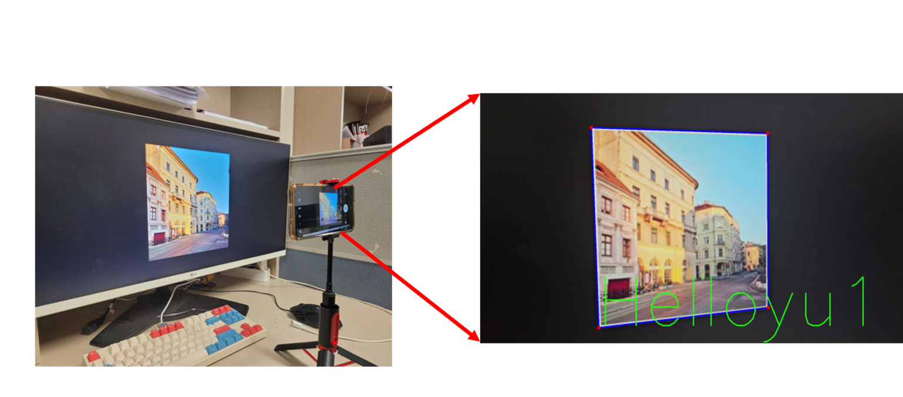
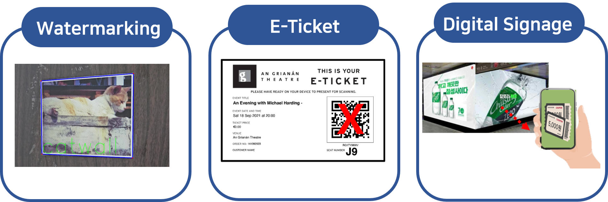

Display Field Communication (DFC)
💡 개요 (Overview)

Display Field Communication (DFC)는 디지털 이미지 내에 데이터를 은닉하여 삽입하는 기술입니다.
QR 코드와 유사한 역할을 하지만, 원본 콘텐츠의 화질 왜곡을 최소화하면서도 숨겨진 데이터를 다양한 디스플레이 및 프린트 매체를 통해 안전하게 전달할 수 있습니다.
특히 QR 코드와 달리 삽입된 데이터가 사람의 눈에는 보이지 않으므로 보안성이 매우 뛰어납니다.
🚀 활용 분야 (Applications)

🕰️ 기존의 DFC 기술
기존의 DFC 방식은 레퍼런스 이미지와 데이터 이미지 두 가지를 모두 디스플레이에 송출하여 데이터 디코딩에 사용했습니다.
따라서 데이터 추출을 위해서는 반드시 원본 역할을 하는 레퍼런스 이미지와 데이터가 포함된 이미지 1쌍이 동시에 필요하다는 한계가 있었습니다.
📝 관련 논문
- Performance evaluation of data embedding schemes for two-dimensional Display Field Communication Tae-Min Kim, Pankaj Singh, Sung-Yoon Jung* (Optics Express: Impact Factor: 3.3, Optics:Q1, 2024)
✨ 최신 DFC 기술 (Current Research)
최신 연구를 통해 기존의 레퍼런스 이미지를 완전히 삭제하고, 데이터 이미지만을 사용하는 단일 프레임 방식을 개발했습니다.
QR 코드처럼 데이터 추출을 위해 단 하나의 이미지만 필요하므로 통신 효율성이 크게 향상되었습니다.
또한, 디스플레이 속의 이미지뿐만 아니라 종이에 프린트된 이미지에서도 동일하게 데이터를 추출할 수 있는 범용성을 확보했습니다.
위 영상처럼 최신 DFC 방식은 레퍼런스 이미지가 없는 극한의 환경에서도 실시간 데이터 디코딩이 가능합니다.
📝 관련 논문
- [SCIE] Design and Performance Evaluation of SF-DFC Based on Data Embedding Optimization Tae-Min Kim, Pankaj Singh, Sung-Yoon Jung* (IEEE Access: Impact Factor: 3.6, Optics:Q1, 2026)
- [Oral Session] Image Segmentation Using YOLOv8 for Display Field Communication (DFC) Tae-Min Kim, Sung-Yoon Jung* (IEIE/IEEE International Conference on Consumer Electronics-Asia (ICCE-Asia), Danang, Vietnam, Nov. 2024)